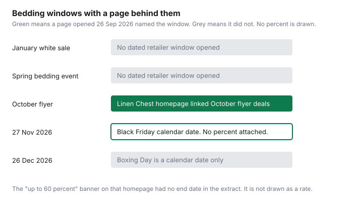

Household Items and Supplies · Canada
Where to Buy Bedding and Towels in Canada Now That The Bay Is Gone—and How to Pay Less
Hudson’s Bay was, for a lot of households, the place with a linen department and a white sale. The stores are closed. The replacement is not one new “best” banner. It is a short list of retailers you already have, read for fibre and return rules rather than for a thread-count trophy. This page does not rank mattresses, towels, or stores. It tells you what was on the pages opened on 26 September 2026, and what was not.
Key takeaways
- CBC News, 27 May 2025: Hudson’s Bay would have closed all stores by 1 June 2025, when the liquidation had run its course. A CBC report dated 1 June 2025 said the doors closed on all stores. No revival is discussed here.
- No Canadian standard opened for this draft sets a minimum thread count or a minimum towel GSM. Read the fibre and the spec that the package actually prints.
- HomeSense’s return page, retrieved 26 Sep 2026: original-tender refund within 10 days with receipt and tickets, 30 days for STYLE+ members, then a gift card. Unsellable merchandise can be refused.
- Linen Chest’s homepage that day linked October flyer deals and a banner of up to 60 percent off, without an end date in the text extracted. That is not a January white-sale calendar.
- Care is wash temperature, dose, and drying. The cost per load is the detergent guide. Overdosing was not given a multiplier on a maker page that guide opened.
Where Canadians are buying bedding and towels in 2026 after The Bay's closure
CBC News reported on 27 May 2025 that Hudson’s Bay would lay off more than 8,300 employees, about 89 percent of its workforce, by Sunday, and that by then the retailer would have closed all its stores and the liquidation sale would have run its course. The same story said distribution centres were expected to close on 15 June, with a further 899 layoffs, and that 118 employees would remain for Companies’ Creditors Arrangement Act work. A CBC report dated 1 June 2025 said Canadians said farewell as the country’s oldest retailer closed the doors to all its stores after filing for bankruptcy in March. Those are the closure facts this draft opened. They are not a forecast about the brand name, a new owner, or a website that might sell linens later. If a revival is announced, it will be on a dated page. It is not assumed here.
What is still open, on pages this draft did open, is narrower than a national tour. Linen Chest’s homepage, opened 26 September 2026, presents itself as a bedding, home decor, kitchen, and bath store, with a link to October flyer deals. HomeSense’s return policy was retrieved the same day, which is evidence the banner is taking returns, not evidence that every towel there is a bargain. IKEA, Costco, JYSK, Simons, Canadian Tire, and Walmart are in the table as places households use. Return rules are filled in only where a page was opened. The Costco household guide is about paper and laundry on a dated list, not about sheet sets. Membership math stays on the food guides.
Thread-count myths: fibre, weave, and GSM for towels matter more
Thread count is a count of yarns in a square inch, and marketing can raise it by counting plies separately or by using a weave that feels smooth and wears thin. That mechanism is why a four-digit number on a poly-cotton blend is not a decision. This draft did not open a Canadian textile standard, a Competition Bureau ruling, or a retailer spec that sets “above this count, ignore it.” So there is no cutoff in the table. The practical read is fibre first, then weave, then any number the package defines.
Fibre is cotton, linen, bamboo viscose, polyester, or a blend, and the label has to say which. A percale weave and a sateen weave feel different. Percale is usually matte. Sateen is usually smoother. Neither word is a price. GSM, grams per square metre, is the weight measure you are more likely to see on a towel than on a sheet. A higher GSM towel is heavier. It can absorb more and it can take longer to dry on a rack in a Canadian January, which is a humidity problem in a small bathroom, not a virtue. No minimum GSM was on a standard opened here. If the retailer prints 500 GSM, write it down and compare it with another towel that also prints a GSM. If only one of them prints it, you are not comparing.
HomeSense, Winners, and Marshalls: brand-name linens at off-price (and how to check quality)
These three are TJX Canada banners. Off-price means the ticket is not a department-store comparison you can reconstruct, and the same pattern may not be there next week. Quality is the label in your hand. Look for fibre content, country of origin if it is printed, hem stitches that are not already loose, and a GSM or thread count only if it is printed with a definition. A familiar brand name on a towel is a starting point. It is not a test report.
HomeSense’s return page, retrieved 26 September 2026, says it will refund a purchase within 10 days, with the original register receipt and tickets attached, in the tender you paid. You may take a gift card instead. Beyond 10 days, with the receipt and tickets, refunds are a gift card for the amount paid. Gift cards do not expire, on that page. Gift receipts are exchange or store credit. Merchandise in unsellable condition can be refused. STYLE+ members, the free TJX Canada loyalty program used at Winners, HomeSense, and Marshalls, get the original-tender window extended from 10 days to 30 days. Without a receipt, a return needs government photo identification and, if accepted, comes back as a gift card. The store may limit or decline it. Underwear, earrings, diamond jewellery, gift cards, and face coverings are final sale on that page. Bedding was not on the final-sale list retrieved. Tickets still have to be attached. A washed towel is unsellable. Wash it only when you are keeping it, or while you are still inside a window that survives a wash. The page does not promise that a washed return will be accepted.
Costco, IKEA, JYSK, Linen Chest, and Simons: what each does best
“Does best” here is the job the household is trying to finish, not a ranking this site is willing to invent. Linen Chest’s homepage is a specialist linen and bath front door, and on 26 September 2026 it was promoting an October flyer and a banner of up to 60 percent off. That banner did not, in the text extracted, name an end date or a bedding subcategory. Treat “up to 60 percent” as a homepage claim checked that day, not as a permanent discount and not as the discount on the sheet you want. IKEA is a flat-pack and textile floor where a product page can state a return window. The only IKEA return line opened beside this draft was on a cast-iron pan: 365 days. It is not copied onto sheets. Costco’s household value, on the guide already published, was paper and laundry on one dated list. It was not a sheet-set test. JYSK, Simons, Canadian Tire, and Walmart are in the table so you remember to open their return page before you assume The Bay’s old window still exists somewhere. Their return rules were not on a page this draft opened.
| Retailer | What was verified | Return rule opened |
|---|---|---|
| Linen Chest | Homepage presents bedding, decor, kitchen, and bath. October flyer link. Banner: up to 60 percent off, no end date extracted. | Not on a policy page opened 26 Sep 2026. The word “Returns” was in the navigation only. |
| HomeSense, Winners, Marshalls | Off-price banners. Quality is the label in hand, not the store name. STYLE+ is the shared loyalty program. | HomeSense page: 10 days to original tender with receipt and tickets. STYLE+ extends that to 30 days. Then a gift card. Unsellable goods can be refused. |
| IKEA | A cast-iron pan page showed a 365-day return. That line is not a bedding rule. | Not opened for sheets or towels. Read the product page. |
| Costco | Household paper and laundry math is a different guide. No sheet-set price was opened here. | Not opened for bedding on 26 Sep 2026. |
| JYSK, Simons, Canadian Tire, Walmart | Named because households use them. No bedding spec or price was opened for this draft. | Not opened 26 Sep 2026. Do not invent The Bay’s old window. |
Second table, and it is short on purpose. Fibre and weave are the spec you can read without a lab. GSM and thread count are useful only when the package defines them. There is no “good towel starts at” number in this guide.
| Line on the package | What to do with it |
|---|---|
| Fibre | Cotton, linen, viscose, polyester, or a blend. This is the first comparison. |
| Weave | Percale and sateen feel different. The word is a description, not a score. |
| Thread count | Use it only beside fibre and weave. No cutoff was verified. |
| GSM | Weight of a towel or cloth. Higher is heavier, not automatically better. No minimum was verified. |
Sale cycles: January white sales, Black Friday, and spring events
Those three names are how Canadian linen ads have been timed for years. A name is not a window. This draft did not open a retailer page that dated a January 2026 or January 2027 white sale, or a spring bedding event, with a start and an end. It will not draw those months in green. Black Friday in 2026 is 27 November, the day after the fourth Thursday in November. Boxing Day is 26 December. The appliance calendar is about those dates for machines, and it refuses invented discount percents. The same refusal applies to sheets. A calendar date is not a percent off a duvet.
What was dated in a weak sense is Linen Chest’s homepage on 26 September 2026, which linked “October Flyer Deals” and showed “up to 60 percent off” without a closing date in the extracted text. Shop the flyer if you are buying this month, and read the flyer’s own end date at the till. Do not file October as a permanent linen holiday. Do not file the 60 percent as the discount on every SKU. “Up to” is a ceiling.

Care routines that double linen lifespan (wash temps, detergent dose, drying)
The heading’s “double” is the hope in a care ad. This draft did not open a textile study that measured a doubled life from a specific wash temperature, so it will not claim a multiplier. What the care label on the sheet actually says is the temperature. Hotter than the label is how elastic and colour die. Colder than the label can be fine for cotton that is not stained, and the energy side of cold water is a utilities question, not a linen ranking.
Dose is the line you can price. The detergent guide divides a jug by the loads on the label. Extra detergent is extra residue in towels, which is a reason they feel less absorbent, and it is extra money. That guide did not find a 1.5 to 2 times overdosing figure on a maker page. Do not invent one here. Use the scoop the bottle prints for your machine size. Dry sheets until they are dry, not until they are hot for an extra twenty minutes you did not measure. A towel that never quite dries in a tight bathroom grows sour. That is a rack and a window, or a shorter load, not a new GSM. Line-drying a sheet can be the gentlest cycle the label allows. It is also a winter humidity choice. If the label says tumble dry low, that is the instruction. The retailer return window closes when you have washed the set, so learn the window before the first wash.
Sources & date stamps
- CBC News, Jenna Benchetrit, “Hudson's Bay to lay off more than 8,300 employees by June 1,” posted 27 May 2025. Stores closed and liquidation finished by 1 June 2025, on that story. Distribution centres 15 June. Further 899 layoffs. 118 employees for CCAA work.
- CBC, “Hudson’s Bay closes its doors after 355 years,” dated 1 June 2025. Doors closed on all stores after a March bankruptcy filing.
- Linen Chest homepage, linenchest.com/en_ca/, opened 26 Sep 2026. Bedding, decor, kitchen, and bath. October flyer link. Banner text included up to 60 percent off, without an end date in the extract.
- HomeSense return policy, homesense.ca/en/returns, text retrieved 26 Sep 2026. 10-day original tender, STYLE+ 30 days, then gift card, unsellable goods refused, no-receipt rules, and the final-sale list named above.
- No thread-count or GSM standard was opened. No January white-sale or spring bedding window was dated.
Frequently asked questions
Where can I buy bedding now that The Bay has closed?
CBC News reported on 27 May 2025 that Hudson's Bay would have closed all its stores by 1 June 2025, and a CBC report dated 1 June 2025 said the doors closed on all stores. This guide does not speculate about a revival. Linen Chest's homepage, opened 26 September 2026, still sells bedding and bath, and HomeSense, Winners, and Marshalls are a separate off-price path with the return rules below.
Does thread count matter?
A printed thread count is not a quality grade by itself. It does not tell you the fibre, whether yarns were plied to inflate the number, or the weave. This draft did not open a Canadian standard that sets a minimum thread count, so it does not print one. Read fibre and weave on the package, then the return window, before you pay for a number.
What GSM should a good towel have?
GSM is grams per square metre, a weight. A heavier towel is often denser, and it also takes longer to dry. This draft did not open a Canadian standard that sets a minimum GSM for a bath towel, so it does not print one. Use the GSM on that product's spec if the retailer prints it, and judge absorbency after a wash you can still return.
Is HomeSense bedding good quality?
HomeSense is an off-price banner, not a quality grade, so the piece in your hand is the test: fibre on the label, stitches, and whether the GSM or thread count is even printed. HomeSense's return page, retrieved 26 September 2026, refunds to the original tender within 10 days with the receipt and tickets attached, or 30 days for TJX Canada STYLE+ members. After that, the page says the refund is a gift card, and unsellable goods can be refused.
When do bedding sales happen in Canada?
This draft did not open a dated January white-sale or spring-event page from a retailer. Linen Chest's homepage, opened 26 September 2026, linked October flyer deals and showed a banner of up to 60 percent off, without an end date in the text extracted. Black Friday in 2026 falls on 27 November as a calendar date. No bedding discount percent was attached to that date on a page opened here.